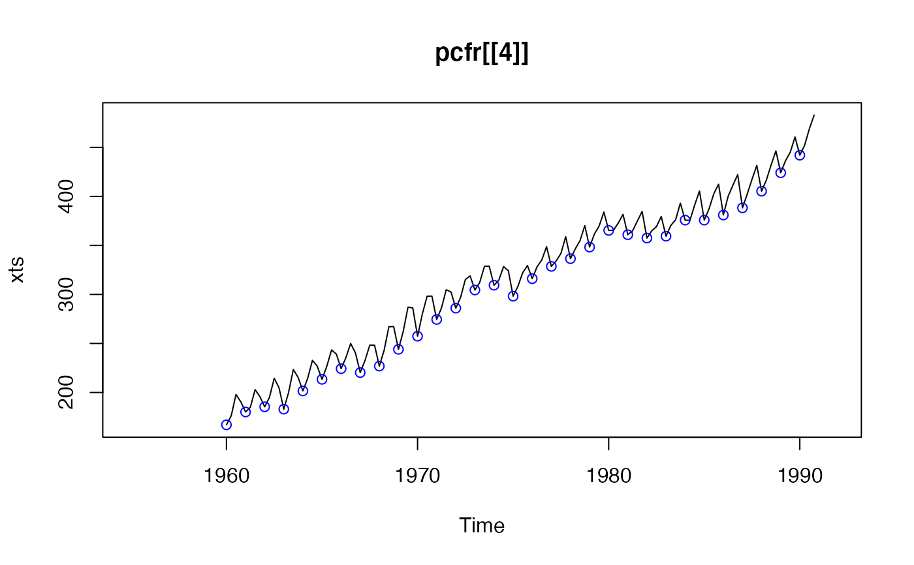
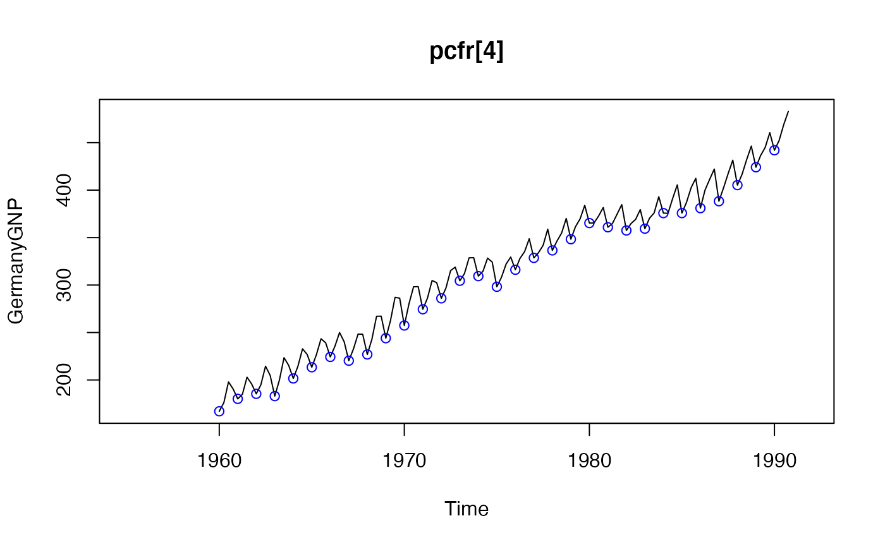
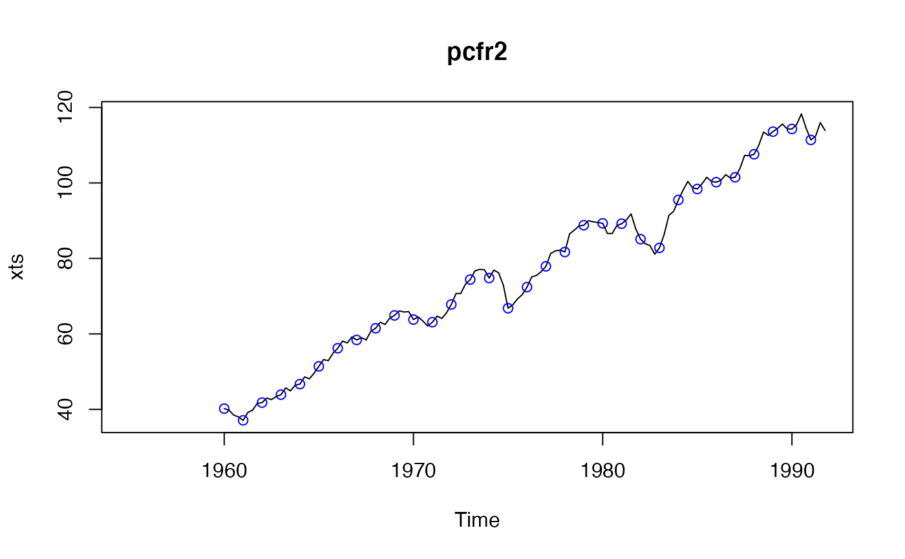

Class "PeriodicMTS"
PeriodicMTS-class.RdClass "PeriodicMTS" is the main class for multivariate periodic
time series in package "pcts".
Objects from the Class
Objects can be created by calls of the form
new("PeriodicMTS", ...) but it is recommended to use
the function pcts in most cases.
Extends
Class "PeriodicTimeSeries", directly.
Class "matrix", from data part.
Class "Cyclic", by class "PeriodicTimeSeries", distance 2.
Class "array", by class "matrix", distance 2.
Class "mMatrix", by class "matrix", distance 2.
Class "optionalMatrix", by class "matrix", distance 2.
Class "structure", by class "matrix", distance 3.
Class "vector", by class "matrix", distance 4, with explicit coerce.
Methods
- $
signature(x = "PeriodicMTS"): ...- [
signature(x = "PeriodicMTS", i = "ANY", j = "missing", drop = "ANY"): ...- [
signature(x = "PeriodicMTS", i = "missing", j = "missing", drop = "ANY"): ...- [[
signature(x = "PeriodicMTS", i = "ANY"): ...- coerce
signature(from = "mts", to = "PeriodicMTS"): ...- coerce
signature(from = "PeriodicMTS", to = "ts"): ...- coerce
signature(from = "ts", to = "PeriodicMTS"): ...- plot
signature(x = "PeriodicMTS", y = "missing"): ...- show
signature(object = "PeriodicMTS"): ...- summary
signature(object = "PeriodicMTS"): ...- [
signature(x = "PeriodicMTS", i = "ANY", j = "ANY", drop = "ANY"): ...- [
signature(x = "PeriodicMTS", i = "AnyDateTime", j = "ANY", drop = "ANY"): ...- [
signature(x = "PeriodicMTS", i = "AnyDateTime", j = "missing", drop = "ANY"): ...- [[
signature(x = "PeriodicMTS", i = "ANY", j = "ANY"): ...- fitPM
signature(model = "PeriodicArModel", x = "PeriodicMTS"): ...- pcApply
signature(object = "PeriodicMTS"): ...- pcMean
signature(object = "PeriodicMTS"): ...
See also
pcts which is the recommended way to create periodic
time series,
class PeriodicTS for the univariate case,
dataFranses1996 and pcts-package for examples
Examples
pcfr <- pcts(dataFranses1996)
colnames(pcfr)[4] # "GermanyGNP"
#> [1] "GermanyGNP"
## extracting single time series as univariate
class(pcfr[[4]]) # "PeriodicTS"
#> [1] "PeriodicTS"
#> attr(,"package")
#> [1] "pcts"
identical(pcfr[[4]], pcfr$GermanyGNP ) # TRUE
#> [1] TRUE
identical(pcfr[[4]], pcfr[["GermanyGNP"]]) # TRUE
#> [1] TRUE
plot(pcfr[[4]])

## ... and as multivariate
pcfr[4] # "PeriodicMTS"
#> An object of class "PeriodicMTS"
#> Slot "cycle": Object from built-in class 'QuarterYearCycle'
#> Cycle start: Quarter_1
#>
#> GermanyGNP
#> Y1955_1 NA
#> Y1955_2 NA
#> Y1955_3 NA
#> Y1955_4 NA
#> Y1956_1 NA
#> Y1956_2 NA
#> Y1956_3 NA
#> Y1956_4 NA
#> Y1957_1 NA
#> Y1957_2 NA
#> Y1957_3 NA
#> Y1957_4 NA
#> Y1958_1 NA
#> Y1958_2 NA
#> Y1958_3 NA
#> Y1958_4 NA
#> Y1959_1 NA
#> Y1959_2 NA
#> Y1959_3 NA
#> Y1959_4 NA
#> Y1960_1 167.0
#> Y1960_2 176.2
#> Y1960_3 198.0
#> Y1960_4 190.5
#> Y1961_1 180.1
#> Y1961_2 184.9
#> Y1961_3 202.9
#> Y1961_4 195.8
#> Y1962_1 185.4
#> Y1962_2 195.0
#> Y1962_3 214.5
#> Y1962_4 204.9
#> Y1963_1 183.0
#> Y1963_2 199.9
#> Y1963_3 223.5
#> Y1963_4 215.4
#> Y1964_1 201.6
#> Y1964_2 214.4
#> Y1964_3 232.8
#> Y1964_4 226.9
#> Y1965_1 213.4
#> Y1965_2 226.7
#> Y1965_3 243.4
#> Y1965_4 239.2
#> Y1966_1 224.3
#> Y1966_2 235.5
#> Y1966_3 250.0
#> Y1966_4 240.3
#> Y1967_1 220.3
#> Y1967_2 232.6
#> Y1967_3 248.3
#> Y1967_4 248.2
#> Y1968_1 226.9
#> Y1968_2 243.0
#> Y1968_3 267.1
#> Y1968_4 267.2
#> Y1969_1 244.0
#> Y1969_2 262.3
#> Y1969_3 287.1
#> Y1969_4 286.2
#> Y1970_1 257.4
#> Y1970_2 280.1
#> Y1970_3 298.2
#> Y1970_4 298.3
#> Y1971_1 274.5
#> Y1971_2 286.2
#> Y1971_3 304.8
#> Y1971_4 302.5
#> Y1972_1 286.0
#> Y1972_2 296.9
#> Y1972_3 315.2
#> Y1972_4 318.9
#> Y1973_1 304.5
#> Y1973_2 312.1
#> Y1973_3 328.7
#> Y1973_4 328.8
#> Y1974_1 309.4
#> Y1974_2 314.5
#> Y1974_3 328.4
#> Y1974_4 324.2
#> Y1975_1 298.2
#> Y1975_2 308.2
#> Y1975_3 322.1
#> Y1975_4 329.5
#> Y1976_1 316.1
#> Y1976_2 328.1
#> Y1976_3 335.2
#> Y1976_4 348.8
#> Y1977_1 328.6
#> Y1977_2 334.1
#> Y1977_3 341.8
#> Y1977_4 358.9
#> Y1978_1 336.5
#> Y1978_2 346.4
#> Y1978_3 354.8
#> Y1978_4 370.2
#> Y1979_1 348.3
#> Y1979_2 361.5
#> Y1979_3 369.8
#> Y1979_4 384.0
#> Y1980_1 365.3
#> Y1980_2 365.4
#> Y1980_3 372.8
#> Y1980_4 381.7
#> Y1981_1 360.9
#> Y1981_2 364.9
#> Y1981_3 374.8
#> Y1981_4 384.7
#> Y1982_1 357.5
#> Y1982_2 364.8
#> Y1982_3 369.2
#> Y1982_4 379.5
#> Y1983_1 359.4
#> Y1983_2 370.4
#> Y1983_3 376.0
#> Y1983_4 393.1
#> Y1984_1 375.8
#> Y1984_2 375.6
#> Y1984_3 391.2
#> Y1984_4 405.5
#> Y1985_1 375.8
#> Y1985_2 387.2
#> Y1985_3 402.7
#> Y1985_4 412.4
#> Y1986_1 381.0
#> Y1986_2 400.1
#> Y1986_3 411.4
#> Y1986_4 422.2
#> Y1987_1 388.3
#> Y1987_2 402.4
#> Y1987_3 417.5
#> Y1987_4 431.6
#> Y1988_1 405.3
#> Y1988_2 416.6
#> Y1988_3 432.2
#> Y1988_4 446.4
#> Y1989_1 424.1
#> Y1989_2 436.3
#> Y1989_3 445.0
#> Y1989_4 460.6
#> Y1990_1 442.0
#> Y1990_2 452.1
#> Y1990_3 468.9
#> Y1990_4 482.9
#> Y1991_1 NA
#> Y1991_2 NA
#> Y1991_3 NA
#> Y1991_4 NA
plot(pcfr[4])

## extracting more than one time series
plot(pcfr[2:4])
summary(pcfr[2:4])
#> USTotalIPI CanadaUnemployment GermanyGNP
#> Min. : 37.10 Min. : 210.0 Min. :167.0
#> 1st Qu.: 61.30 1st Qu.: 372.8 1st Qu.:243.8
#> Median : 76.60 Median : 587.0 Median :328.2
#> Mean : 77.22 Mean : 707.4 Mean :317.9
#> 3rd Qu.: 93.25 3rd Qu.: 940.5 3rd Qu.:375.9
#> Max. :118.30 Max. :1630.0 Max. :482.9
#> NA's :20 NA's :36 NA's :24
pcfr2 <- pcfr[[2]]
plot(pcfr2)
